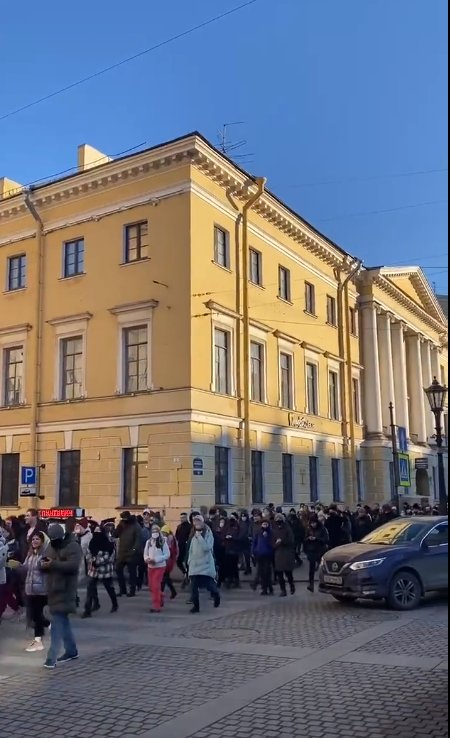
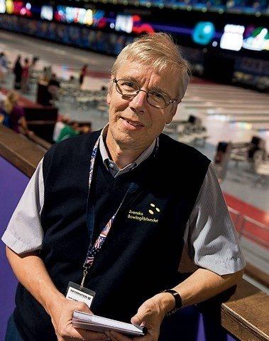
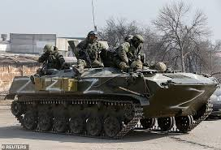

2022
9 jan 2022 2nd Prayer Rally for the Salvation of the Homeland,
Live zoom 158/fb 47; meeting in Korea.
Inspelning Sanna mor talar efter ca 1:45:00
10-13 febr fredsmöte i Korea
Världen: Vulkanutbrott
20 december 2021 började ett vulkanutbrott på Hunga Tonga-Hunga Ha'apai, en undervattensvulkan i
Tonga-skärgården i södra Stilla havet.
15 januari 2022 exploderar vulkanen, likt en enorm kärnvapenexplosion, som kunde ses från rymden.

19 jan 50-års jubileum av dom första missionärerna som kom till Finland den 19 jan 1972. Kirsti (finsk
syster) och Ellen (tysk) 
11-14 febr WORLD SUMMIT 2022

Sanna mors tal
Pictures
Rysslands Putintrupper invaderar Ukraina!
hotar Sverige och Finland med kärnvapen om dom läger sig i.
Söndag 6 mars -

protester i St Petersburg mot kriget!
Nästan 13 000 personer i Ryssland har hittills gripits för att ha demonstrerat mot kriget i Ukraina.
Under sändagen har protester ägt rum i 63 olika stöder runt om i Ryssland och siffrorna på antalet
frihetsberövade stiger.
Bra bok som beskriver utvecklingen i Ryssland efter 1992.
Winter is coming
- by Gary Kasparov Chess world champion
24 febr - Special EUME Prayer Call for Peace in Eastern Europe
4 mars 4:e Prayer EUME Prayer meeting, med över 722 zoomdeltagare, 56 FB.
 Nordic leader reunion- meeting in Germany
Nordic leader reunion- meeting in Germany
Vär första gemensamma "Nordic Service"
sändag 20 mars kl 11.00 CET (12.00 Finland)
maj 2022 - Rev. Ryoichi Oba gives Testimony of the early UC-Church in Russia.
Rev. Kevin Charles McCarthy, 71, of Woodbridge, Virginia, died May 21, 2022 at Inova Fairfax Hospital
2 aug 2022 - Broder Hans Karlsson avlider i hjärtattack.

Hans var den nationsledare för Sverige som varit längst hittills; 17 är i två perioder, 1981-1993 och 2003-2007.
21 aug
En dotter, Moon Jeong-ah
föddes idag, 21 augusti 2022 (7.24 i den Himmelska kalendern) kl. 07:16
Hyo-jin Nim and Yeon-ah Nim's första barnbarn Moder och barn är vid god hälsa.
Nu börjar 4:e generationen.
30 aug Världen: Michail Gorbatjov död.


27-28 aug Peace march - Fredsmarch och möte på gränsen mellan Norge-Sverige; Morokulien.
8 sept Världen: Englands drottning Elizabeth II dör.
Några av mina tankar om Ukraina-kriget... 
från Principerna vet vi att 1:a och 2:a världskrigen med miljoner dödade, var gottgörelse för nye Kristus
att födas och påbörja sin mission.
Kalla kriget var 3:e "världskriget" - ett ideologiskt krig.
Attacken mot Ukraina är en attack mot demokrati, fri press, fria val och västerländska värderingar.
En fortsättning på det ideologiska "kalla kriget" denna gång totalitarianism (inte kommunism).
den SISTA BOKSTAVEN i engelska alfabetet är Z. = historiens slut...slutet på regimen som startade kriget.
Z finns inte i det ryska kirylliska alfabetet.
 Ukraina har + ett KORS som sitt tecken. = söker främst demokratiska värderingar!
Ukraina har + ett KORS som sitt tecken. = söker främst demokratiska värderingar!
8 sept Världen:Protester i Iran började den 16 september 2022, efter att 22-åriga Mahsa (Jina)
Aminis död i polisförvar av Irans missbrukande "moralpolis".
Iranska myndigheter har hänsynslöst slagit ner på omfattande anti-regeringsprotester med överdriven och
dödlig kraft i hela Iran, enligt Human Rights Watch.
4 Heliga dagar firas; Sanna föräldrars dag - 1 mars 1960 månkalendern, Sanna barnens dag - 1 oktober 1960, Alla tingens dag - 1 maj 1963, Sanna Guds/Himmelska förälderns dag, 1 jan 1968.
26 okt 2022
50-ärs jubileum
av grundandet av Sunmoon University, Wonhwa-gwan Korea.
12 och 13 november 2022, den mycket efterlängtade högtidliga öppningsceremonin för Cheon Shim Won ägde rum tillsammans med den senaste CheonBo-workshopen i Las Vegas USA.
Cheon Shim Won Prayer Devotion äger rum varje morgon må-fre, runt världen, med "Resonance prayer"- resonansbön 5-10min.
3 nov Världen: Ryska förlusten av distrikthuvudstaden Cherson, den enda distriktshuvudstaden som de
kontrollerat, har kallats för ett pinsamt misslyckande för Vladimir Putin och hans regim. Den 3 november
2022, nio månader efter att det ursprungliga slaget vid Cherson slutade, tog ryska styrkor bort sin flagga
från stadens administrativa byggnad och rådde kvarvarande människor att lämna staden och korsa floden till
den södra stranden.
P1 ekonyheter 13 nov.; "Ilska bland Kremls hökar och gatudemonstrationer; Servat (satan) 7 misilen borde
skjutas mot Washington...mot Washington Washington..."
Kommentar; hmm...satan7?...vilken andevärld kan det vara bakom Rysslands beteende!